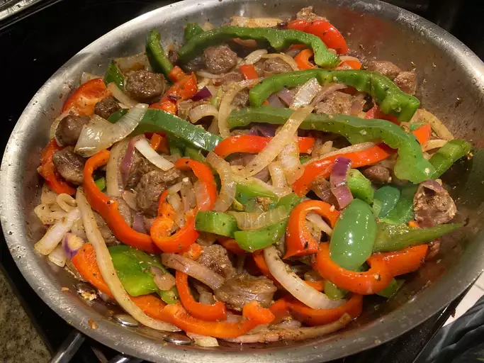

Sausage and Peppers

You wont believe how good this is!
Is there anything better than a nice crusty hero some sausage and Peppers
that have been cooking all day to warm the soul? I dont think so! My mom used
to make this for me and my brothers on cold winter nights, and it would always be
a great pick me up after being outside and shoveling snow all day!
Ingrediants
- Sweet and Hot Italian sausage
- Green and red peppers
- 2 large yellow onions
- Red sauce
- Italian seasoning
- Olive oil
Steps
- First, preheat oven to 375 degrees farenheit
- Next, peel and thinly slice onions, followed by the peppers.
Cut sausages into chunks
- Place the sausage, peppers, and onions on a baking tray and seasoning
with salt, pepper, and italian seasoning. Comine mixture with pasta
sauce and cover tray with aluminium foil
- Bake for 1 hour, remove from oven and serve on a hero or with white rice!
It goes great with a nice cold beer!